This is a coloring simulation that was built with Unity in C# and exported to WebGL. This project showcases translating a 2D sprite to a 3D map, animations, and optimizations by using object pooling and material property blocks to help render 1024 cubes with ease.
Unity is a game engine that has been around since 2005. Unity is one of the most popular game engines along with the Unreal Engine. Unity allows for cross platform development so developers can build their products on a variety of systems using one code base. With Unity, developers can export their game to WebGL, iOS, Android, Windows, MacOS, Linux, PS4, Xbox One and more. Unity provides the relevant libraries for developers such as their physics library that helps simulate realtime physics to ensure objects correctly accelerate and respoind to collisions, gravity, and various other forces. Also Unity graphics are highly customizable, developers can control the appearance of their application by changing lighting effects, textures, particle systems, and many more visual effects. Unity offers a 2D and 3D enviroment for developers to work on. The main language Unity uses is C# to enable inputs for events in the enviroment using scripts on objects. Some popular games have been developed using Unity such as Rust, Escape from Tarkov, Hearthstone, Temple Run, Pokemon GO, Angry Birds and many more!
To play all you have to do is hold the mouse down and drag to move the crayon around the screen. All you have to do is complete the image infront of you. Press next to skip to the next image. This is a simulation.
The below image shows what the scene looks like and how the cubes are set up in the enviroment.
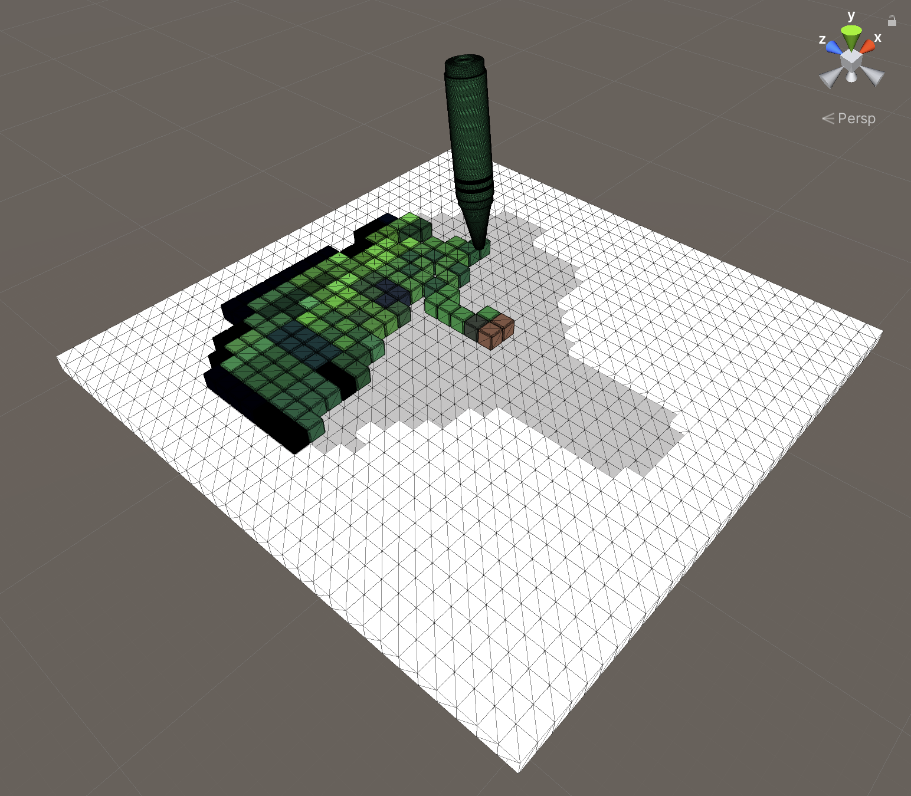The below image shows the values of the camera that projects the enivorment. The orthographic setup is used to represent the 3D enviroment but keep everything the same size unlike a perspective camera. The background color is set to a solid color of white to blend in our images white borders so what we are drawing is the main priority.
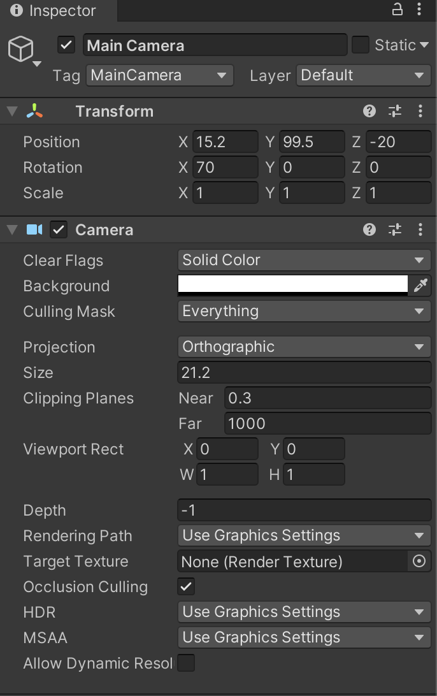The crayon consists of many components to be able to see, move, and interact with the crayon.
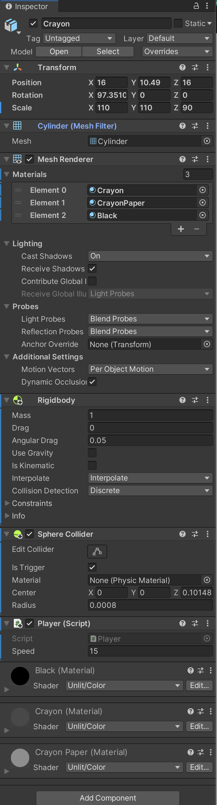The crayon also has a Mesh Filter and Mesh Renderer components that displays our crayon's mesh that was made in Blender and its materials.
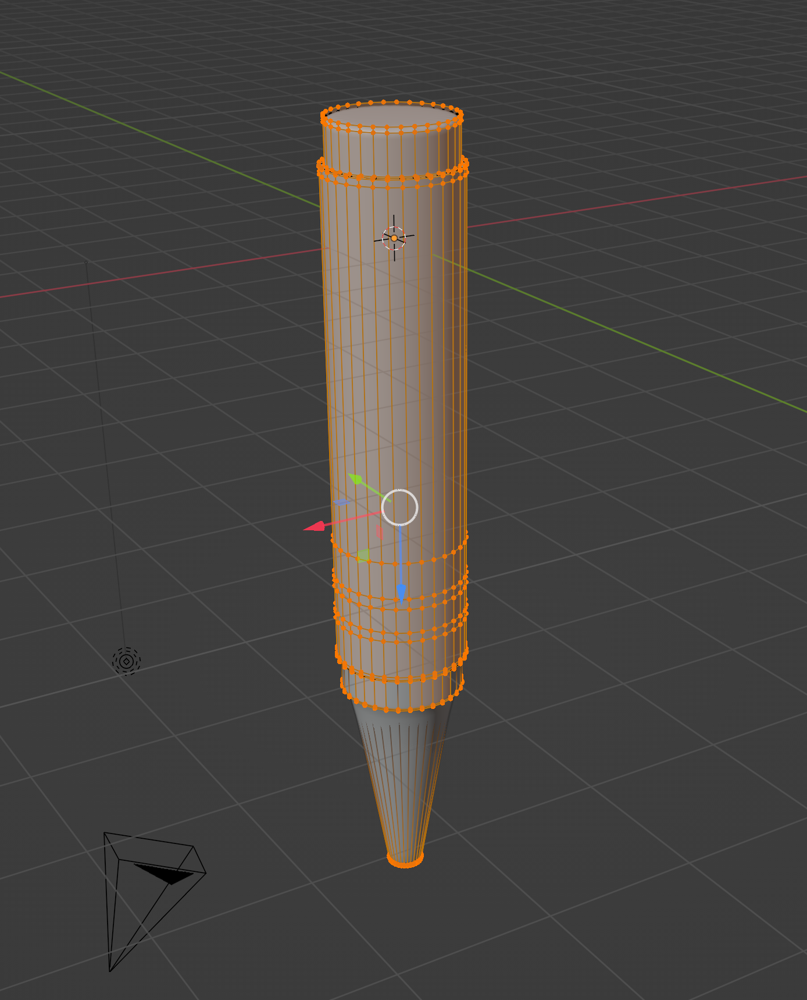The crayons paper material and skin material are edited through our Player script to fade to each colour of the cubes color we are on.
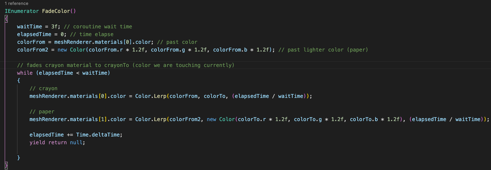The crayon has a rigidbody and sphere collider component allows for the crayon to interact with other objects colliders in the scene while the crayon is moving. The rigidybody is apart of Unity's phyics library so we do not need to calculate distances or anything our selves, it is all under the hood. The sphere collider is positioned right at the tip of the crayon and is fixed to that position on the crayon.
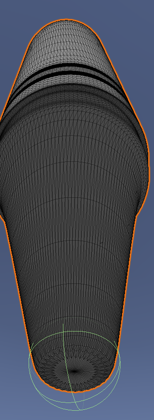The collider is set to a trigger so it can pass through objects and still detect collision. It is used to communicate with each cube it is colliding with to tell it is hit.
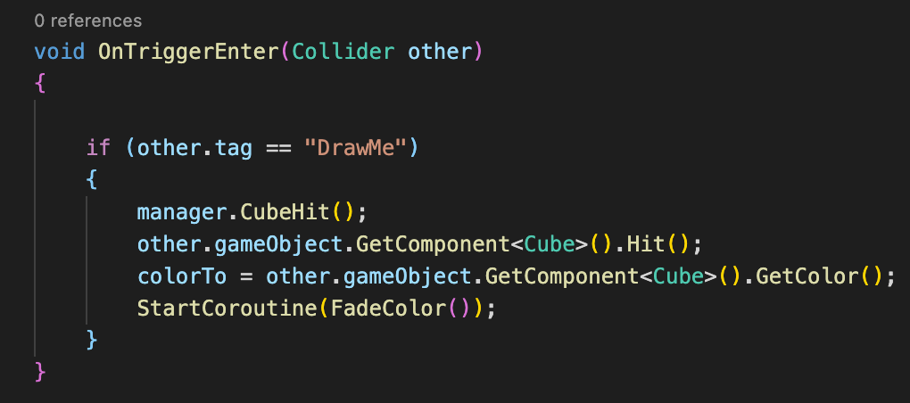The Crayon has a C# attatched to itself called Player which allows us to control movement of the crayon using the mouse when it is being dragged across the screen. The crayon is moved using the FixedUpdate because it is instep with the physics engine. We use rb.MovePosition() to interpolate the crayons position for a smooth look.
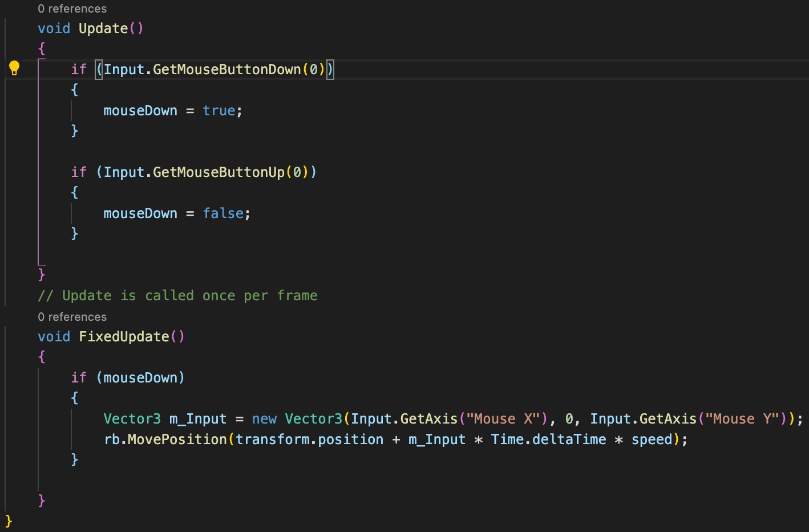Cubes mesh. Created in blender using a bevel modifier for that rounded cube look.
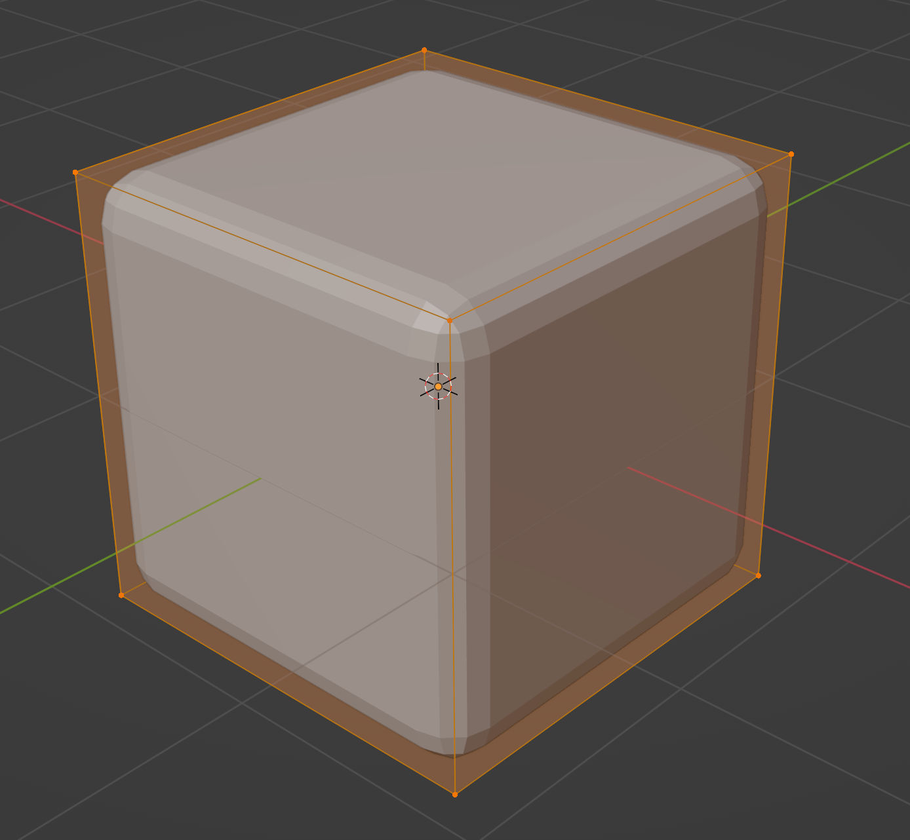Each cube mesh is disabled so we can give the illusion that we "colored" that spot in. When the cube is hit by the crayons sphere collider we will enable the mesh on the cube to appear.
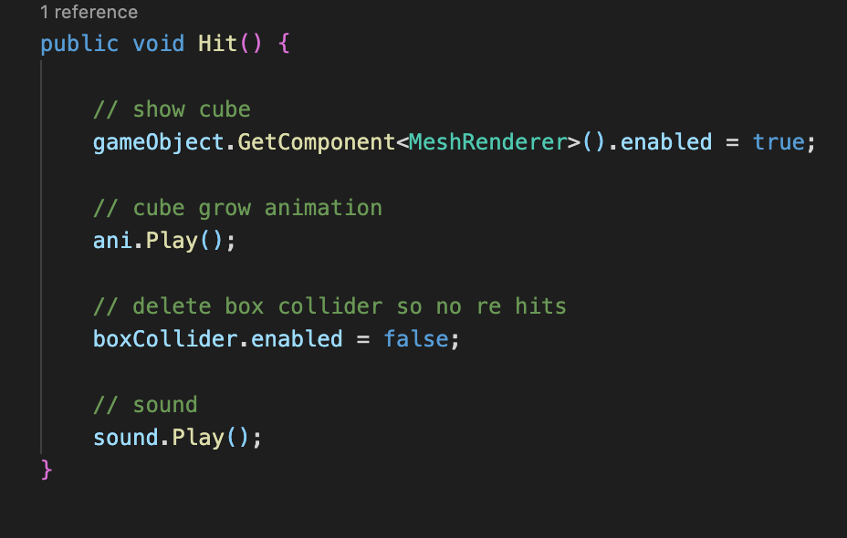When each cube is hit it will play a growing animation. The animation is recorded using Unity animation editor.
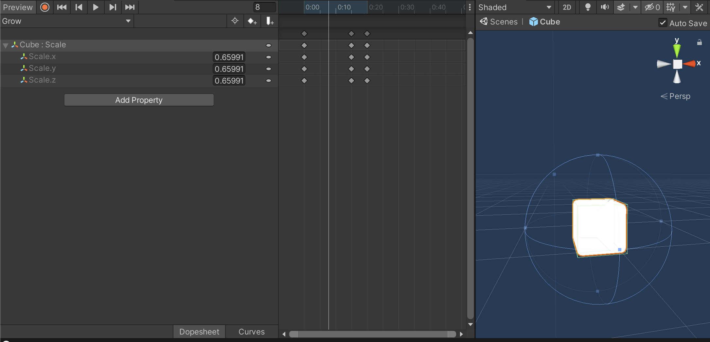Another animation that is used is it at the end of the game when the cubes do a wave. The animation works by calculating the distance of each cube from (0,0,0) so the cubes closests jumps first. The jumping is a lerping effect that lerps their y positions to a jump height of 5 and then times it to jump back down.
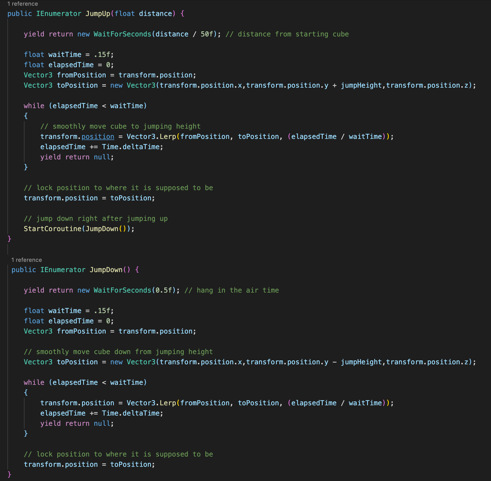To get the 32x32 2D pixel art sprites to convert into 3D cubes we first create a pool of 1024 cubes that are ready to be used. We create a new Texture2D that reads and copies the sprite. With that 2D texture we can get each pixel in a array using texture2D getPixels() method. For all the pixels in the texture (1024 since they are 32x32) we can spawn our cubes from the pool with the according parameters such as position and color. For all transparent png's the transparency is detected if a pixel color is black, so we can sort out if the cube is to be coloured or not. Each transparent pixel is labeled as a border cube.
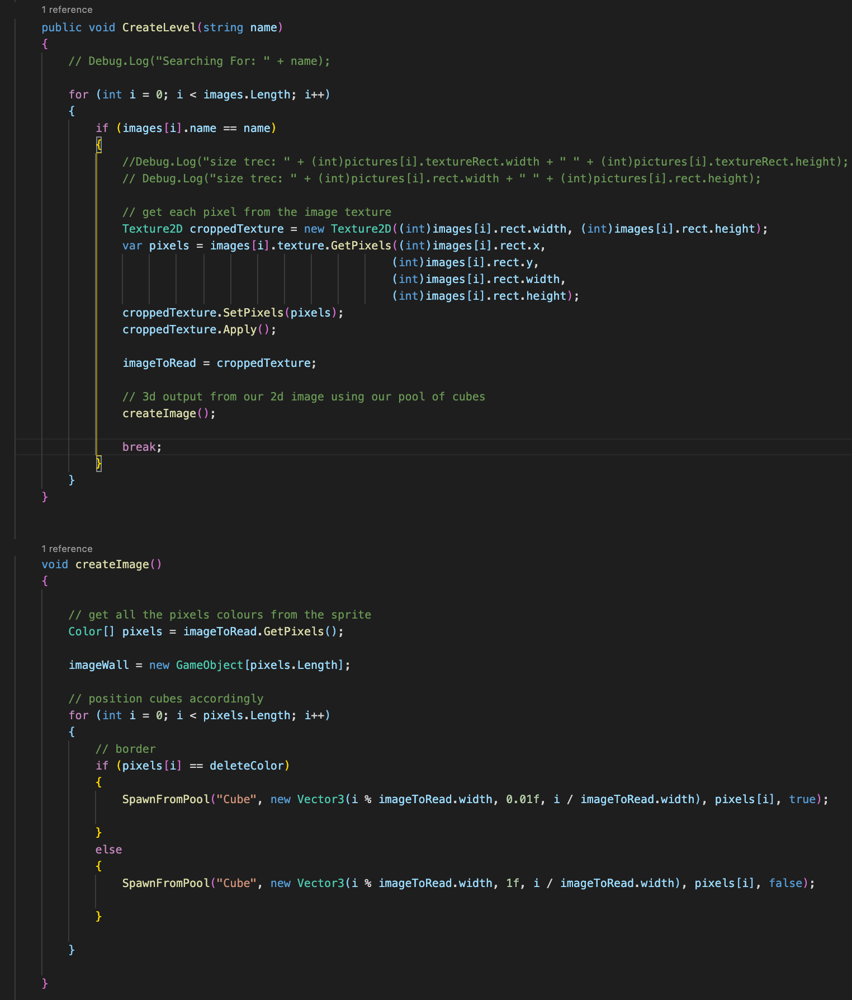Each cube is customized based off of where it fell in the pixel array to match the 2D sprite image that was passed in. If the cube is a border (transparent) then we apply the white border color to it. Else we apply the colour that pixel it represents in the sprite, the mesh is also disabled so we can enable it when the marker goes over to show that drawing simulation effect.›
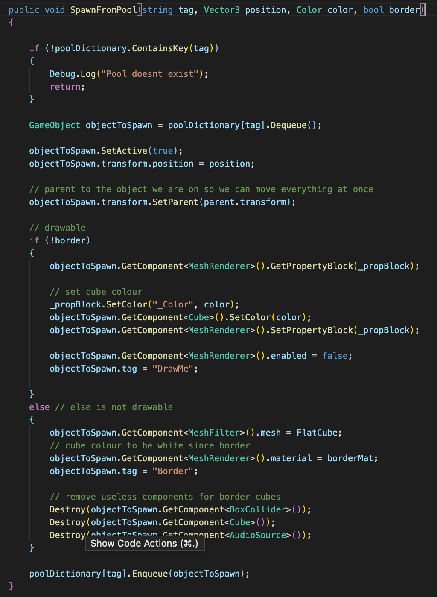Since we are drawing 1024 3d cubes we need to optimize. Instead of creating a new material for each cube when we spawn from the pool we can use a shared material and just change the color for each indiviual cube, a MaterialPropertyBlock solves that issue. MaterialPropertyBlock is used by Graphics.DrawMesh and Renderer.SetPropertyBlock. Use it in situations where you want to draw multiple objects with the same material, but slightly different properties. For example, if you want to slightly change the color of each mesh drawn. It helps reduce the amount of draw calls we have on our system. In the Coloring Simulation object pooling is also used to optimize. Object pooling pre-instantiates all the cubes we are going to use before gameplay so each cube is not instantiated while computing each pixel.
The magic of Material Property BlocksTo add a flow to the Coloring Simulation a Game Manager script will help. The script will take in the count of all the cubes and cubes hit to determine when the game is done. Once the number of cubes hit equals cubes to be drawn then the game manager will make all the cubes jump in their wave animation then transition to the next scene of a random image.
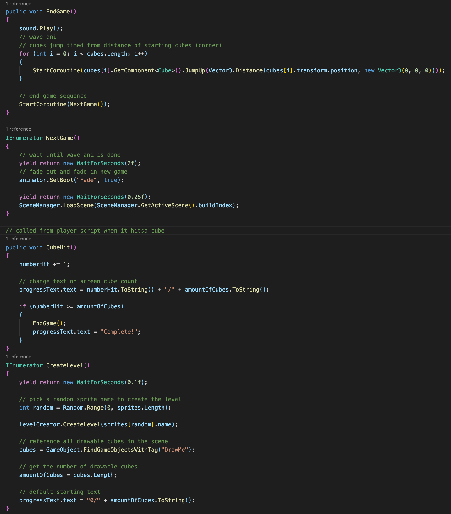 Pixel art package linkEnjoy!
Created by Cameron Cronheimer 6517080 and Aman Braich 6511679